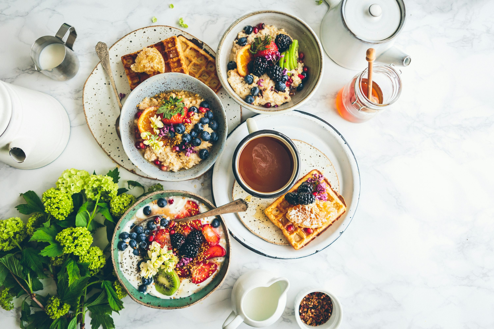

Why The Eatery?
We serve crave-worthy breakfast classics made fresh every morning. Whether you’re looking for fluffy pancakes, hearty omelets, or the perfect cup of coffee—we’ve got you covered.

The Eatery began as a small family kitchen where weekend breakfasts turned into cherished community
gatherings.
What started with a love for pancakes and freshly brewed coffee soon grew into a neighborhood favorite.
Founded in 2015, The Eatery was built on the idea that great mornings start with great food—and even
better
company.